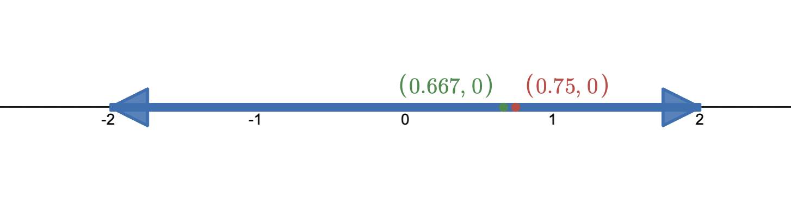

A Rational Number is any number that can be expressed in the form \(\frac{a}{b}\), where \(a\) and \(b\) are integers and \(b \neq 0\)
This includes Terminating and Repeating decimals.
Terminating decimals are decimals that end or terminate after a certain number of digits.
ex) 0.5, 0.75
Repeating decimals are decimals that do not terminate but instead have a repeating pattern of digits after the decimal point.
ex) \(0.\overline{142857}\)
Example: Which of the following numbers are Rational?
\( \{-4, 0, \frac{2}{3}, \sqrt{9}, 2.\overline{1} , \sqrt{5}, -2.1313, 3.7569\} \)
Solution:
1) -4 is a rational number as it can be rewritten in the form \(\frac{-4}{1}\).
2) \(\frac{2}{3}\) is a rational number.
3) \(\sqrt{9}\) is a rational number as \(\sqrt{9} = 3 = \frac{3}{1}\).
4) \(2.\overline{1}\) is a rational number as it is a repeating decimal.
5) \(\sqrt{5}\) is not a rational number because it cannot be expressed as the quotient of two integers.
It is a non-repeating, non-terminating decimal and cannot be exactly represented as a fraction.
6) \(-2.1313\) is a rational number as it is a terminating decimal.
7) \(3.7569\) is a rational number as it is a terminating decimal.
When comparing rational numbers, you're determining which one is greater, less than, or equal to another number. Here are some methods to compare rational numbers:
Common Denominator Method
- Convert fractions to have a common denominator.
- Compare the numerators.
- The fraction with the greater numerator is the greater number.
Decimal Comparison - Convert fractions to decimals.
- Use the decimal representations to compare the numbers directly.
Number Line
- Plot the numbers on a number line.
- The number to the right is greater, and the number to the left is lesser.
Example: Which fraction is greater, \(\frac{3}{4}\) or \(\frac{2}{3}\)
Solution:
Method 1) Common Denominator Method
The least common multiple of 4 and 3 is 12.
Now we rewrite both fractions with the common denominator of 12:
\(\frac{3}{4} = \frac{3 \times 3}{4 \times 3} = \frac{9}{12}\)
\(\frac{2}{3} = \frac{2 \times 4}{3 \times 4} = \frac{8}{12}\)
Now we compare the numerators: \(9 \gt 8\)
Since 9 is greater than 8, \(\frac{9}{12}\) is greater than \(\frac{8}{12}\).
Therefore, \(\frac{3}{4}\) is greater than \(\frac{2}{3}\)
Method 2) Decimal Comparison Method
Convert both fractions to decimals and compare them directly.
\(\frac{3}{4} = 0.75\)
\(\frac{2}{3} = 0.\overline{6}\)
Now we compare the decimals: \(0.75 \gt 0.\overline{6} \)
Therefore, \(\frac{3}{4}\) is greater than \(\frac{2}{3}\)
Method 3) Number Line Method
Plot the fractions oon a number line.
\(\frac{3}{4} = 0.75\)
\(\frac{2}{3} \approx 0.667\)
On the number line:

Since \(\frac{3}{4}\) is the right of \(\frac{2}{3}\), \(\frac{3}{4}\) is greater than \(\frac{2}{3}\).
Ordering rational numbers involves arranging them from least to greatest or from greatest to least.
Ascending Order
(Least to Greatest)
- Compare the rational numbers using any of the comparison methods mentioned above.
- Arrange them from the least to the greatest.
Descending Order
(Greatest to Least)
- Compare the rational numbers using any of the comparison methods mentioned above.
- Arrange them from the greatest to the least.
Example: Order the following set of numbers in both descending order and ascending order:
\( \{5, -3, 7, 0, -2\} \)
Solution:
1) Descending order: \( \{-3, -2, 0, 5, 7 \} \)
1) Ascending order: \( \{7, 5, 0, -2, -3 \} \)
Addition/Subtraction of Fractions:
- Express fractions with the common denominator
- Adding the numerators
Multiplication of Fractions:
- Multiply the numerators
- Multiply the denominators
Division of Fractions:
- Invert the divisor
(The reciprocal of a fraction is obtained by swapping the numerator and denominator)
- Multiply the fractions
Example: \( \frac{3}{5} + \frac{1}{10}\)
Solution:
Step 1) Find the common denominator: The least common multiple (LCM) of 5 and 10 and 10.
Step 2) Express fractions with the common denominator:
\( \frac{3}{5} = \frac{6}{10} \)
Since \(\frac{1}{10}\) already has the desired denominator, we don't need to change it.
Step 3) Add the fractions: Now that both fractions have the same denominator, we can add them together.
\(\frac{6}{10} + \frac{1}{10} = \frac{7}{10} \)
Therefore, the answer is \(\frac{7}{10} \).
Example: \( \frac{3}{5} \times \frac{1}{10}\)
Solution:
Multiply the numerators and numerators
\( \frac{3 \times 1}{5 \times 10} = \frac{3}{50}\)
Therefore, the answer is \(\frac{3}{50}\)
Example: \( \frac{3}{5} \div \frac{1}{10}\)
Solution:
Step 1) Invert the divisor: the reciprocal of \(\frac{1}{10}\) is \(\frac{10}{1}\)
Step 2) Multiply the fractions:
\( \frac{3}{5} \times \frac{10}{1} = \frac{3 \times 10}{5 \times 1} = \frac{30}{5} = 6\)
Therefore, the answer is 6.
Converting rational numbers from decimal form to fraction form allows us to perform operations more easily, as fractions can be manipulated using well-known arithmetic rules.
1) Convert the Decimal to a Fraction:
To convert a decimal number to a fraction, consider the decimal place value.
ex) 0.75 has 2 decimal places, so it can be rewritten as \(\frac{75}{100}\)
2) Perform Operations With Fractions:
Once you have the rational numbers in fraction form, you can perform addition, subtraction, multiplication, or division following the rules of fraction arithmetic.
3) Convert the Result Back to Decimal Form (if necessary):
After obtaining the result in fraction form, you can convert it back to decimal form if needed. To do this, divide the numerator by the denominator.
ex)\(\frac{75}{100} = 0.75\)
Example: \( 0.6 \times 0.25 \)
Solution:
Step 1) Convert the Decimals into fractions:
\(0.6 = \frac{6}{10}\)
\(0.25 = \frac{25}{100}\)
Step 2) Perform Operations with Fractions:
\(\frac{6}{10} \times \frac{25}{100} = \frac{6 \times 25}{10 \times 100} = \frac{150}{1000} = \frac{15}{100}\)
Step 3) Convert back to Decimal:
\(\frac{15}{100} = 0.15\)
Therefore, the answer is 0.15
Order of operations, often remembered by the acronym BEDMAS, is a set of rules that determines the sequence in which mathematical expressions should be evaluated. These rules ensure consistency and accuracy in mathematical calculations.
1) Brackets
Evaluate expressions inside brackets first, starting with the innermost brackets and working outward. Brackets clarify which operations to perform together.
2) Exponents
Evaluate expressions involving exponents or powers next. Perform calculations involving powers and roots, including squares, cubes, and square roots.
3) Division and Multiplication
Perform multiplication and division operations from left to right as they appear in the expression. These operations have equal precedence and are evaluated in the order they appear.
4) Addition and Subtraction
Perform addition and subtraction operations from left to right as they appear in the expression. Like multiplication and division, these operations have equal precedence and are evaluated in the order they appear.
Example: \( 2 \times (3 + 4) - 5 \div 2 \)
Solution:
Step 1) Evaluate the expression inside the brackets first:
\(3 + 4 = 7\)
So, now the equation is \( 2 \times 7 - 5 \div 2 \)
Step 2) Exponents:
There are no exponents in this expression, so we move to the next step.
Step 3) Division and Multiplication:
Perform division and multiplication from left to right as they appear in the expression:
\( 2 \times 7 = 14\)
\( 5 \div 2 = 2.5\)
Replace the results in the expression: \( 14 - 2.5 \)
Step 4) Addition and Subtraction:
\( 14 - 2.5 = 11.5\)
Therefore, the answer is 11.5